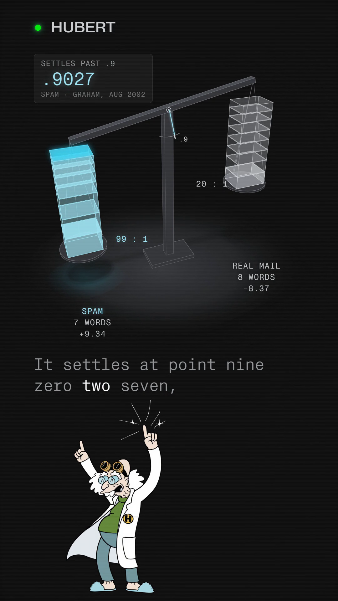

You commented BAYES — this is the spam scale card.
The classic spam filter never reads a word. It weighs it.
Paul Graham split his own inbox into two piles in August 2002: about 4,000 spam messages and about 4,000 he wanted, and counted how often each word showed up in each pile. The ratio of those two counts is the word's weight — “madam” sits at 99 to 1 because it never appeared in his real mail, not because it's an inherently bad word. He kept only the fifteen words furthest from a neutral .5, turned each ratio into its log base 10 so a scale that can only add still obeys Bayes' rule, which multiplies odds with every word, and set the notch at 9 to 1 (.9). A real “atypical spam” from his own inbox that August has seven words on the spam pan against eight on the real side, and it still tips to .9027 — a hair past the notch — because the real side's heaviest word is only about 20 to 1.
Companion to the reel · Watch it on @huberttheinventor

Nº001 · The two piles
Spam, and the mail he actually wanted
In August 2002 Paul Graham published “A Plan for Spam,” describing a filter built on two corpora of his own mail: one of spam, one of mail he wanted. By his own account, “at the moment each one has about 4000 messages in it.” He counted how many times each word appeared in each pile. No word is read for meaning; it is only ever counted.
Nº002 · The ratio, not the word
A word is never spam by itself
Graham's own example is “madam”: “obviously from spams beginning ‘Dear Sir or Madam,’ … the word ‘madam’ never occurs in my legitimate email, and it's all about the ratio.” “Madam” is a perfectly polite word; it only weighs 99 to 1 because of how unevenly it falls across his two piles. Counting every word in two inboxes of 4,000 messages each would be noisy and slow, so Graham kept only “the most interesting fifteen tokens, where interesting is measured by how far their spam probability is from a neutral .5” — the words whose ratio says the most.
| madam | .99 — 99 : 1, spam-heavy (“never occurs in my legitimate email”) |
| shortest / mandatory | .0472 — about 20 : 1 real-mail-heavy, the heaviest word on the real side |
| “the” | .5 — illustrative: a word that shows up in both piles alike, not one of Graham's fifteen |
Nº003 · The fix
A scale adds. Bayes' rule multiplies.
Graham: “if you combine these numbers according to Bayes' Rule, you get the probability that the mail is spam.” Bayes' rule multiplies the odds of every word together. A physical scale can only add, so each word's weight is set to the log, base 10, of its ratio — stacking weights on a beam is the same arithmetic as multiplying odds. A 99-to-1 word (log10 99 ≈ 1.996) weighs about twice as much as a 10-to-1 word (log10 10 = 1). The notch sits at 9 to 1, log10 9 ≈ 0.954, labelled “.9”: Graham says plainly, “I treat mail as spam if this probability is more than .9… in practice few probabilities end up in the middle of the range.”
Nº004 · The real marks
A real spam from his own inbox, Aug 2002
Graham linked an “actually quite atypical spam” with these fifteen weighed words: seven on the spam pan (madam, promotion and republic at .99 each, then enter, quality, investment and valuable) and eight on the real-mail pan (shortest and mandatory at .0472, the heaviest real-side words, then standardization, sorry, supported, people's, organization and very). Recomputed this session (2026-10-02) from those fifteen values, weight = log10 of the odds:
| Spam pan, 7 words | madam 1.996 + promotion 1.996 + republic 1.996 + enter 0.992 + quality 0.917 + investment 0.777 + valuable 0.669 = +9.342 |
| Real pan, 8 words | shortest 1.305 + mandatory 1.305 + standardization 1.101 + sorry 1.048 + supported 1.004 + people's 1.004 + organization 0.847 + very 0.762 = −8.375 |
| Net | +0.967, past the notch at +0.954 (log10 9) |
| Combined probability | 0.90265, computed 2026-10-02 from these rounded weights — Graham's own figure: .9027 |
Eight ordinary real-mail words still lose to seven heavier spam words, not because any single spam word is crushing — the real side's heaviest word, at .0472, is only about 20 to 1 against (odds (1−.0472)/.0472 ≈ 20.2), well inside reach of three spam words alone at 99 to 1 (3 × 1.996 = 5.99, which would lose to 8.375). It takes the full seven spam words, together, to tip the beam.
Graham's own result, from the same essay: “we now miss less than 5 per 1000 spams, with 0 false positives” — on his inbox, that year.
Nº005 · The honest scope
One inbox, one year, one man's filter
Graham calls his own method “a slightly tweaked … Bayesian filter,” and it is naive-Bayes-style — word evidence multiplied as if every word were independent of every other — with his own biases layered on: real-mail counts are doubled in his code to bias against false positives, each word's probability is clamped between .01 and .99, and only the top fifteen words are kept. None of that is a claim this page extends past 2002 or past his own inbox. The independence assumption itself — that one word's presence tells you nothing about another's — is a separate question this page does not take up.
One system, taken apart.
Same treatment, different machine. No pitch, no thread-bait, and an unsubscribe link that works.
Take it with you
The spam scale card is this page: all fifteen of Graham's weighed words, settled on the beam, free, no email.
The List
One a week. And the other seven, now.
Confirm your address and the whole set arrives — all ten field guides, exactly as they are on the site, nothing held back for subscribers. After that, one new system taken apart every week. No pitch, no thread-bait, and an unsubscribe link that works.